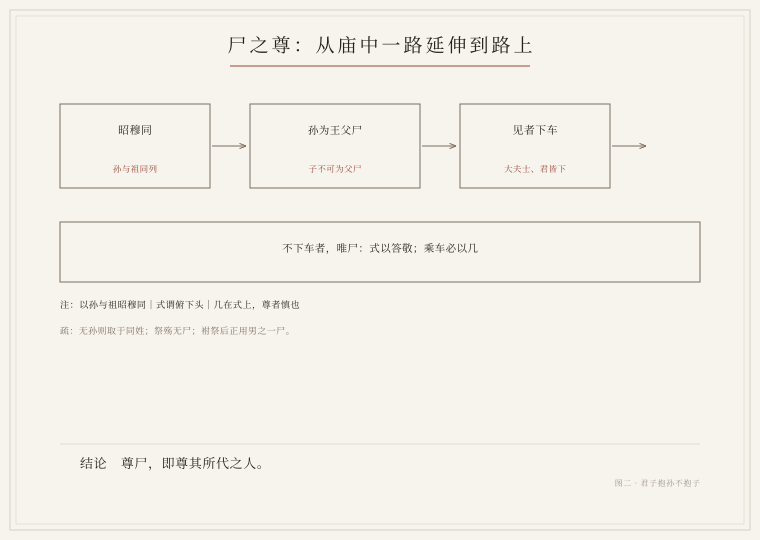

曲礼上 · 一·九十九 · 第 97 课
旧礼有「君子抱孙不抱子」之语；记者解之：孙可以为王父之尸，子不可以为父之尸。凡为君尸者，大夫士见之则下车；君知其为尸，亦自下车；尸在车上必式，乘车必以几。
说什么事：君子抱孙不抱子——孙可为王父尸，子不可为父尸；为君尸者，大夫士见之则下之；君知所以为尸者，则自下之；尸必式，乘必以几。
落在哪一层：礼意，兼及仪。尸之尊，见之于路。
为何编在此位：上节言君子之交，此节言祭中之尸。由人伦入祭礼。
【经】《禮》曰：「君子抱孫不抱子。」此言孫可以為王父尸，子不可以為父尸。為君尸者，大夫士見之則下之。君知所以為尸者，則自下之。尸必式，乘必以幾。
【注】以孫與祖昭穆同。尊尸也。下，下車也。國君或時幼少，不能盡識群臣，有以告者，乃下之。尸必式，禮之。乘必以幾，尊者慎也。
尸 祭祀时代死者受祭之人。疏「祭成人必有尸，尸必以孙」。
昭穆 注「以孙与祖昭穆同」。祖与孙同列，故孙可为祖之尸；子与父昭穆异，故不可。
抱孙 疏「子孙行并皆幼弱，则必抱孙为尸」。孙幼则使人抱之。
下之 注「下，下车也」。见君之尸则下车致敬。
君知所以为尸者 注「国君或时幼少，不能尽识群臣，有以告者，乃下之」。知而后下，故经文著一「知」字。
式 疏「式谓俯下头也」。凭式俯首，是车上之敬。疏详车制：式、较之高下。
乘必以几 注「尊者慎也」。几在式上，尊者所据，几上有幂，君以羔皮、虎缘之。
《礼》说：「君子抱孙不抱子。」这是说孙可以为祖父之尸，子不可以为父之尸。为君之尸的，大夫士见了就下车；国君知道他是尸的，也自下车。尸在车上必俯式，乘车必设几。
一节讲「尸」在路上的尊。尸是死者的替身，故见者下车、君亦下车；尸不自下车，只俯式答敬；乘车必设几，是尊者之慎。礼把祭祀中的尊，一路延伸到道路上。
第一层 昭穆之序 祖孙同列，父子异列。尸之可选，不由亲疏，由昭穆。这是宗法最技术的一面。
第二层 抱孙 孙幼不能立，则抱之。礼不因年幼而废尸，只以人抱之补其不足。
第三层 见尸下车 大夫士见君之尸则下，君知其为尸亦自下。尊尸，即尊其所代之人。
第四层 式与几 尸不下车而俯式，是「尊未伸」；乘车设几，是「尊者慎」。两处皆写「在车上如何敬」。
与今日何干 代长辈受礼的人，旁人照样要敬；坐在车上遇见，按一按喇叭、点一点头，不下车也是敬。此节之今形，在「代者受尊」。
| 左 | 右 |
|---|---|
| 抱孙不抱子 | 孙可为王父尸，子不可为父尸 |
| 昭穆同 | 祖与孙同列，故孙可为尸 |
| 为君尸者 | 代君受祭之人 |
| 见之则下 | 大夫士见尸下车 |
| 君知则自下 | 君识其为尸，亦下车 |
| 尸必式 | 俯式答敬，不下车 |
| 乘必以几 | 几在式上，尊者所据 |
画道路一段：一辆车停于路侧，车箱前横木（式）上俯着一道压痕，式上另置一只小几、几面覆羔皮；车旁地面有两行车辙与几枚脚印，示曾有人下车。不画人、不写文字。赭色只在几的边缘。
